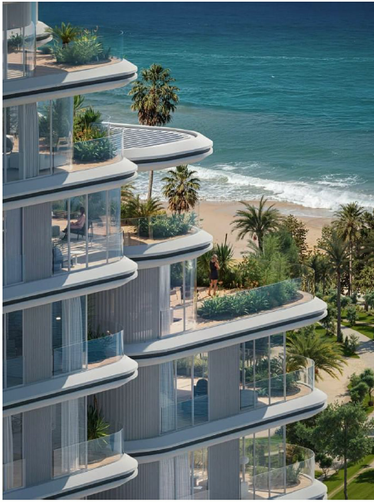
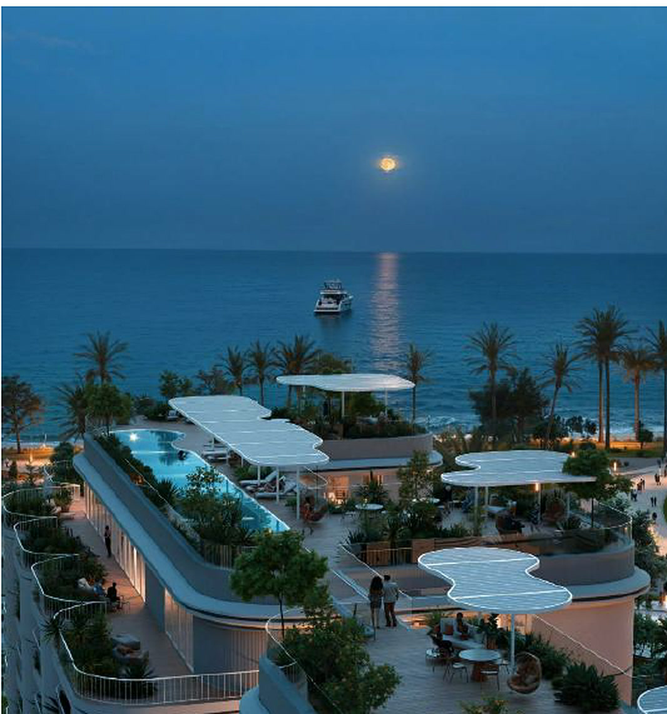

01
תיווך ושיווק נכסים, בארץ ובעולם
רועי מביא עמו למעלה מ־20 שנות ניסיון בתיווך נדל״ן פרטי ומסחרי, לצד חיבורים עסקיים בין בכירים מהמשק הישראלי, באמצעות רשת קשרים חובקת עולם ובדיסקרטיות מוחלטת.
 כאן ירוץ סרטון התדמית
כאן ירוץ סרטון התדמיתעסקאות גדולות נסגרות בלחישה.
גללורועי מביא עמו למעלה מ־20 שנות ניסיון בתיווך נדל״ן פרטי ומסחרי, לצד חיבורים עסקיים בין בכירים מהמשק הישראלי, באמצעות רשת קשרים חובקת עולם ובדיסקרטיות מוחלטת.
כאן ירוץ סרטון התדמית16 פרויקטים בתהליך, 2 כבר אוכלסו. אנו מלווים את התהליך כולו, מבחינת כדאיות, דרך הקמת נציגות הדיירים ועד בחירת היזם המבצע, ופועלים מטעם ולמען הדיירים.
אתם לא משלמים. את השכר שלנו משלם בסוף היזם שייבחר.
כאן ירוץ סרטון מהכנסיםאתר פורץ דרך לקהילה סגורה של משקיעים: עסקאות PRESALE, עסקאות OFF MARKET ועסקאות בין חברים. כל עסקה חד פעמית, במלאי מוגבל, ורק לחברי הקבוצה שמקבלים סיסמה.

FRIENDS & FAMILY ONLYמחלקת ההתחדשות העירונית שלנו מהמובילות בישראל בתחום, עם 16 פרויקטים הנמצאים בתהליך, מהם 2 שכבר אוכלסו. אנו מלווים את התהליך כולו, משלב בחינת כדאיות הפרויקט, דרך הקמת נציגות הדיירים ועד לבחירת היזם המבצע.
קבוצת מצדה מתמחה בניהול, גיבוש והובלת פרויקטים של התחדשות עירונית ופינוי בינוי, ומייצגת את בעלי הדירות החל משלב הרעיון ועד למסירת הדירות החדשות. פרויקטים כאלה דורשים התארגנות וקבלת החלטות משותפות של בעלי הנכסים, וחברתנו פועלת מטעם ולמען הדיירים, כדי למקסם את התמורה ולגרום לפרויקט לרקום עור וגידים.
אנו מחויבים לכם, בעלי הנכסים. אנו עובדים מטעמכם ולמענכם לאורך כל התהליך, בשקיפות מלאה ובמקצועיות של מעל 20 שנות ניסיון, ולבסוף משיגים עבורכם את התמורה הטובה ביותר מהיזם, מבלי שאתם משלמים על השירות שלנו.
תהליך התחדשות עירונית הינו תהליך מורכב הדורש ידע וניסיון. כדי להביא להצלחה ולקידום מוצלח של פרויקטים מסוג זה יש להיעזר בשירותיה של חברה מארגנת.
הדרך אל עבר הגשמת החלום מצריכה זמן רב והמון בירוקרטיה, מאות שעות עבודה מול דיירים, עורכי דין ויזמים. כדי לצלוח דרך זו בצורה הטובה ביותר, יש צורך בגורם חיצוני מנהל מטעם בעלי הדירות, אשר ינצח על תזמורת בעלי האינטרסים שבפרויקט, ובראשם בעלי הדירות והיזם. וזהו תפקידנו, ואת השכר שלנו ישלם רק בסוף היזם שייבחר.
הזמן של כל אחד מכם יקר. אנחנו רצים עבורכם ומקרבים אתכם אל עבר הדירה החדשה.
אנו כאן כדי להשיג עבורכם את המיטב ולהביא לפרויקט מוצלח עם ערך מקסימלי לכל נכס ולפרויקט בכללותו. אנו מתגאים בניהול מכרז יזמים וקבלנים, אשר מעבירים את הכוח אליכם, בעלי הנכסים, ומאפשרים לכם להיות אלה שבוחרים בין מספר תוכניות, מספר יזמים וקבלנים, ולהביא לבחירה המוצלחת ביותר עם הערך המקסימלי והביצוע האיכותי והטוב ביותר לפרויקט שלכם.
שנות ניסיון · אלפי עסקאות נדל״ן
פרויקטים של התחדשות עירונית בליווי
מדינות עם הזדמנויות נדל״ן
הסיפור שלי לא התחיל מנדל״ן.
הוא התחיל מאנשים.
אומרים שזיווגים נעשים בשמיים, אבל מישהו צריך לעזור להם להיפגש. כך שידכתי וחיתנתי זוגות, גישרתי בין קבוצות, וחיברתי בין אנשים שלא ידעו שהם צריכים זה את זה, עד שהפגשתי ביניהם. הבנתי מהר שזה הערך המוסף שלי בעולם: לקרב לבבות ולחבר קצוות. קצוות של אנשים, של עסקים ושל נכסים. את זה מרגישים בבטן, באינטואיציה ובלב, ואז מצליבים מידע עד שהחיבור שלם.
תוך כדי תנועה כתבתי והוצאתי לאור את הספר ״כוח הבחירה״, ספר פילוסופי על בני אדם הדוהרים קדימה בחיים סוערים, בלי לזכור מה המהות והתפקיד האמיתי שלנו בעולם.
בעבר שיחקתי כדורגל בכמה קבוצות בליגות הבכירות בישראל, ובהן קבוצת הבית שלי, מכבי נתניה. שם למדתי חריצות, התמדה, והיכולת לקום על הרגליים ולרוץ קדימה בכל הכוח גם בזמן משבר.
אני נשוי פלוס ארבע, גר בעיר ימים בנתניה, פעיל חברתי, יזם בנפשי, חובב פילוסופיה, ריצה ושחייה. בשעות הפנאי אני עובד אדמה ומטפח צמחים ועצים. מגשים חלומות, מקרב לבבות, וסוגר את העסקאות בשקט, כי עסקה טובה לא זקוקה לרעש.
האנשים הפועלים סביב קבוצת מצדה נבחרו בקפידה רבה וצועדים לצידי שנים רבות.
אתם לא מקבלים שירות.
אתם מקבלים אותי.כשאתם פונים אליי אתם מקבלים כמעט שני עשורים של ניסיון, ראייה רחבה על החיים שחורגת מעבר לעסקה, ואדם שמאמין שכל חיבור נכון נולד מהבנה עמוקה של אנשים. באופן אישי, עד שתצאו מרוצים.